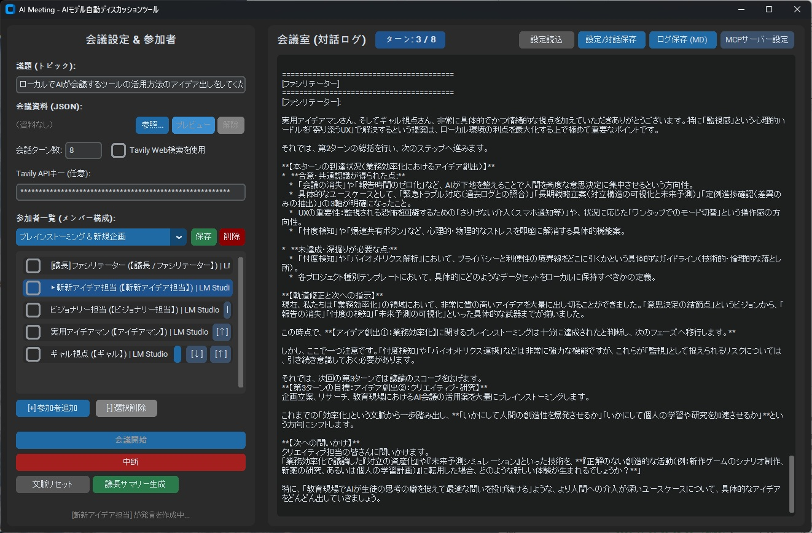
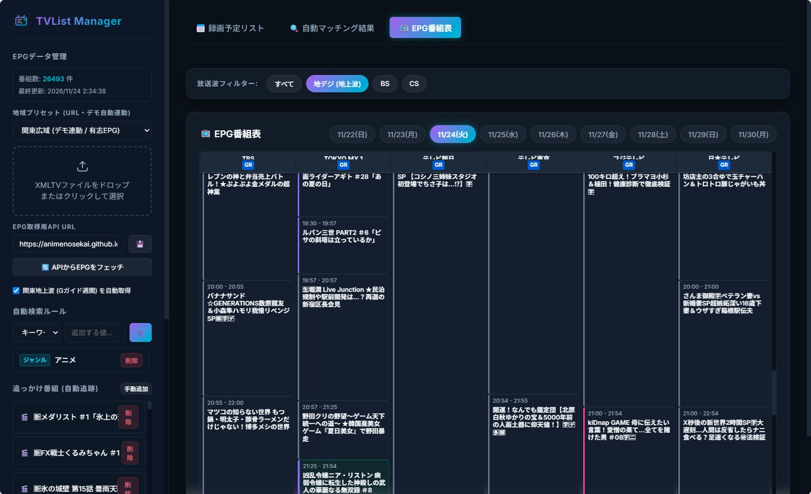
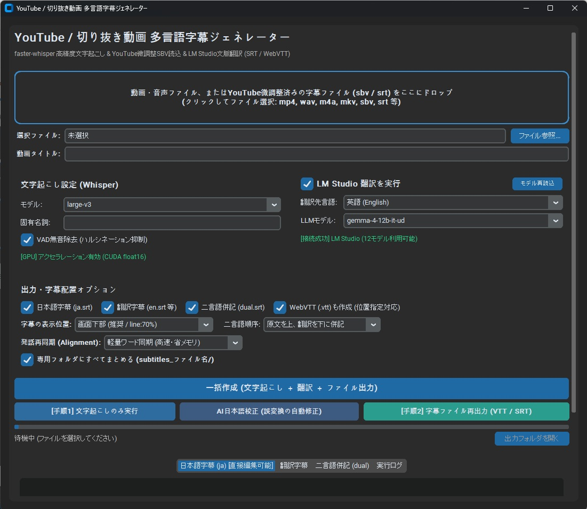

公開アプリとは別に、個人的な興味や日常のちょっとした不便を解消するためにサクッと作った3つのツールを紹介します。
このサイトでは、一般公開を前提に整備したデスクトップアプリやChrome拡張機能を中心に紹介していますが、普段の開発では「完全に自分用」「ちょっとした実験や日常の不便を解消するため」に作った小さなツールもいくつかあります。
今回はその中から、「AI Meeting」「TVList Manager」「YouTube多言語字幕ジェネレーター」の3つをまとめて紹介します。どれも個人利用前提のためラフな部分もありますが、開発のきっかけや工夫したポイント、つまずいた点などをコラムとしてまとめました。
最初はお遊びとして、「LM Studio や Ollama で動かしているローカルAIモデル同士に会議をさせてみたら面白いのでは？」という思いつきで作ったデスクトップツールです。

単体で眺めているだけでも面白かったのですが、使っているうちに「これ、Antigravity の MCP サーバーとして組み込んでみても面白いかも」と気づき、おまけ的な形で開発中のアイデア出しや設計レビューの補助として活用するようになりました。
MCPサーバー版では、最初の発言に引きずられる同調バイアスを防ぐために「独立意見出し → 議長による論点設定 → 本会議討論 → 専用結論エージェントによる最終レポート生成」という4ステップ構成にしています。実用レベルで必須かと言われると正直なところ不明ですが、手元のローカルGPU資源を活かした実験としてはかなり面白い仕組みになっています。
春や秋の番組編成期になると、新番組や特番が一気に増えて「どの番組をどの録画機器に割り振れば、時間帯が被らずに録画できるか」を整理するのが大変になります。それを手元でサッとメモして重複チェックするために作ったのが、Chrome拡張機能（Manifest V3）の TVList Manager です。

YouTube用の字幕を作る際、YouTube標準の自動生成字幕よりも精度の高い文字起こしを行い、さらに「元言語（日本語）」と「翻訳言語（英語など）」の2種類を同時に表示できる字幕を手軽に作りたくて開発した Python（CustomTkinter）製のデスクトップツールです。

faster-whisper（CUDA / GPUアクセラレーション）と Silero VAD を組み合わせ、無音区間のハルシネーションを抑えつつ高精度に文字起こしします。.vtt）で出力可能。WebVTT では YouTube のシークバーと被らない line:70% などの表示位置指定にも対応しています。.sbv ファイルをドラッグ＆ドロップし、位置指定付きの .vtt に再出力する使い方もできます。今回紹介した3つのツールは、いずれも一般公開のような汎用性や完璧なエラー処理までは作り込んでいない、いわば「自分専用の道具」です。
ただ、自分のPC環境（ローカルLLMやGPU）や普段の作業フローに合わせてピンポイントで機能を作れるのは、個人開発ならではの大きな強みだと感じています。今後も「ちょっと面倒だな」と思ったことがあれば、こうしたミニツールを気軽に増やしていくつもりです。